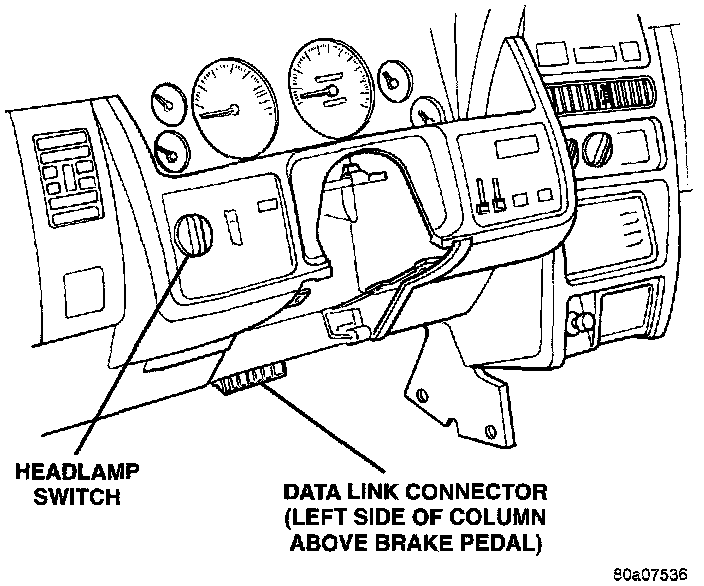

Output Diagnostic Test Mode (Circuit Actuation Tests)
CIRCUIT ACTUATION TEST MODEFig. 1 DLC Location:

The Circuit Actuation Test Mode checks for proper operation of output circuits or devices the Powertrain Control Module (PCM) may not internally recognize. The PCM attempts to activate these outputs and allow an observer to verify proper operation. Most of the tests provide an audible or visual indication of device operation (click of relay contacts, fuel spray, etc.). Except for intermittent conditions, if a device functions properly during testing, assume the device, its associated wiring, and driver circuit work correctly. Connect the DRB scan tool to the data link connector (Fig. 1) and access the Actuators screen.